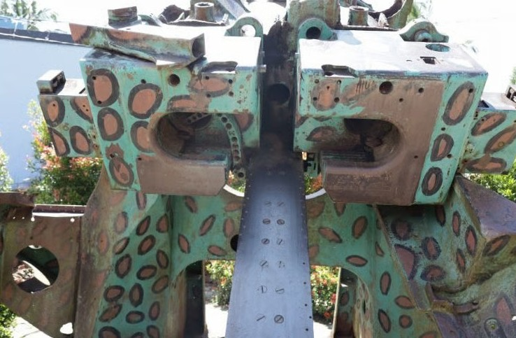
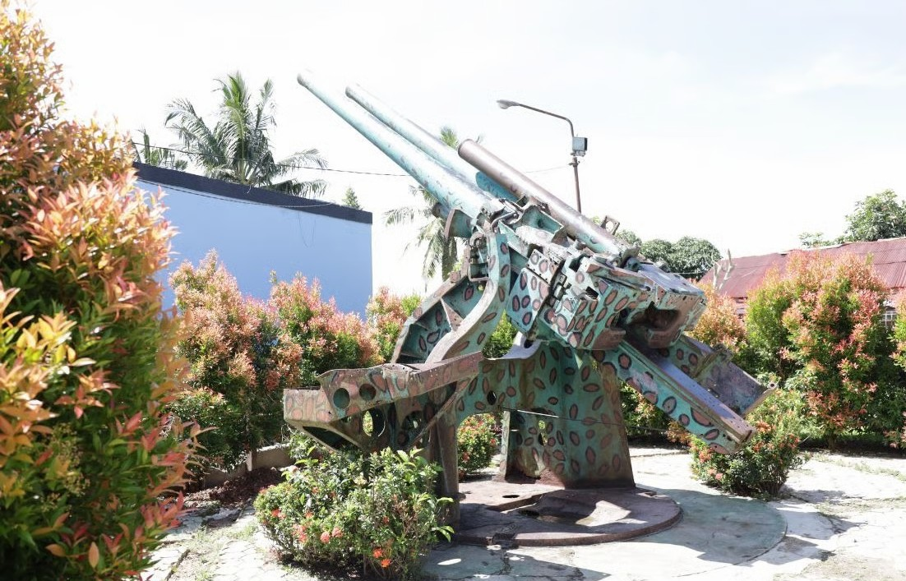

Secara administrasi, Meriam Jepang A terletak di Jalan Sultan Hasanuddin, Kelurahan Baru Tengah, Kecamatan Balikpapan Barat, Kota Balikpapan. Meriam ini terdiri dari dua buah laras sejajar dan dipasang dengan titik putar 360° terbuat dari besi dengan jenis artileri type 10 120mm AA (Anti-Aircraft) gun. Posisi Meriam ini persis di atas bukit yang mengharap ke laut (Teluk Balikpapan). Meriam Jepang ini dikenal dengan meriam kembar oleh warga sekitar, karena terdapat dua meriam yang berukuran sama dan terletak secara berdampingan. Berdasarkan informasi dari Kapten Ilham (Anggota Kodam Mulawarman) meriam Jepang A ini adalah meriam yang dipergunakan oleh korps artileri pesisir tentara Jepang dengan jenis anti Aircraft Gun (anti penangkis) dengan sasaran artileri maupun kapal perang. Sejauh ini meriam senjata jenis ini digunakan oleh tentara Rusia pada perang dunia I. Jenis senjata ini dibuat sekitar tahun 1930an yang merupakan pengembangan dari meriam pertahanan pesisir tipe 1 berkaliber 140mm.
Di area Sidodadi (kadang disebut Gunung Meriam atau puncak perbukitan di Kampung Baru Ilir), terdapat situs meriam peninggalan Jepang yang merupakan bagian dari sejarah Perang Dunia II di Balikpapan.


Situs meriam berada di atas bukit di daerah Sidodadi (Kampung Baru Ilir), sekitar 8 km dari pusat Kota Balikpapan. Wilayah ini memiliki area kurang lebih 2.500 m² dan dulunya menjadi posisi strategis pertahanan Jepang. Di tempat ini biasanya dipagari untuk menjaga kelestarian situs.
Pertempuran Balikpapan 1945 terjadi sejak tanggal 1 hingga 21 Juli 1945, antara pasukan Sekutu dengan serdadu Jepang. Perang ini merupakan tahap penutup dari Operasi Oboe, yang dilancarkan untuk membebaskan wilayah Kalimantan yang diklaim Inggris dan Belanda, dari tangan Jepang. Serangan dimulai pada 1 Juli 1945, di mana pasukan Sekutu mengirimkan 100 kapal dengan sekitar 30.000 pasukan di bawah komando Mayor Jenderal Edward Milford. Sedangkan pasukan Jepang dikomandoi oleh Laksamana Muda Michiaki Kamada, yang berkeukatan sekitar 8.400 hingga 10.000 tentara.
Pertempuran Balikpapan 1945 berakhir pada 21 Juli 1945, dengan kemenangan di pihak Sekutu. Dalam pertempuran ini, Jepang dikenal membangun bunker yang mungkin sudah dibangun dari masa pemerintah kolonial Belanda. Namun juga terdapat kemungkinan, bahwa Jepang juga membangun dan menambah beberapa bangunan pertahanan di wilayah Balikpapan.
Pasukan Australia pertama kali mendarat di Balikpapan pada 1 Juli 1945, dengan menerjunkan Divisi 7 Australia dalam Operasi Oboe-2. Divisi yang mendarat beberapa mil di utara Balikpapan ini terdiri dari tiga Brigade Infanteri dan sejumlah kecil pasukan KNIL (tentara Hindia-Belanda). Setelah itu, pasukan Sekutu mengirim armada invasi yang terdiri dari sekitar 100 kapal dan 33.000 tentara di bawah pimpinan Mayor Jenderal Edward Milford. Pendaratan mereka didahului oleh pengeboman besar-besaran dan penembakan oleh angkatan udara angkatan laut Australia-AS. Mereka secara serentak menerang daratan yang kala itu dijaga oleh sekitar 8.400 hingga 10.000 pasukan Jepang, di bawah komando Laksamana Muda Michiaki Kamada.
Meriam Jepang Baru Tengah A tidak dapat difungsikan lagi, namun masih dalam kondisi terawat dengan beberapa komponen meriam tidak utuh lagi. Saat ini meriam dicat dengan warna hijau motif total. Pada bagian depan lokasi meriam diberi papan informasi sebagai cagar budaya yang dilindungi dan himbauan perlindungan. Keberadaan meriam menyebabkan bukit ini selanjutnya disebut oleh masyarakat sebagai Bukit Meriam. Ukuran: Panjang: 12,7 meter dan Lebar: 3,4 meter.
SK Cagar Budaya Meriam A Link download:
https://drive.google.com/file/d/1nGco-JOEHvclDZGjZKiDlLt9XewXPetB/viewMeriam ini juga masih sering dikunjungi oleh sejumlah pelajar dan masyarakat, baik untuk kepentingan edukasi pendidikan maupun penelitian. Balai Pelestarian Kebudayaan Kalimantan Timur juga telah menugaskan satu orang untuk menjadi juru pelihara pada situs Meriam Jepang ini.